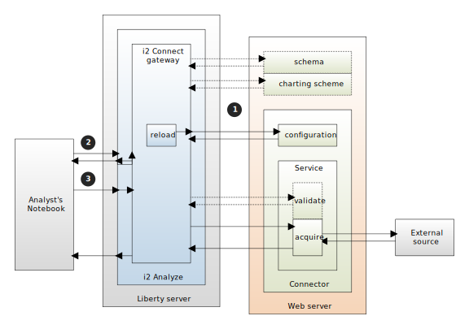

System architecture with the i2 Connect gateway
The simplest possible deployment of i2 Analyze that uses connectors to access an external data source has four parts. The client, in this case Analyst's Notebook® Premium, communicates with a deployment of i2 Analyze that includes the i2 Connect gateway. The gateway manages at least one connector, which in turn exchanges data with an external source.
System interactions
The following diagram represents the deployment that is described in the introduction, and the interactions that take place between each part.

The diagram also identifies five of the REST endpoints that connectors can implement and use:
Configuration endpoint
The gateway sends a request to the mandatory configuration endpoint to gather information about the services that the connector supports. All connectors have at least one service, and it is a service that implements the validate and acquire endpoints.
Note: For connectors whose services present modified behavior to different users, the information is split between two endpoints: this one, and the user-specific configuration endpoint.
Schema endpoint
The schema endpoint is optional, and so is where you implement it. If a connector returns results whose types are not in the Information Store schema or a gateway schema, you can provide a connector schema that define those types. The configuration specifies whether and where a connector schema is available.
Charting scheme endpoint
The charting scheme endpoint is optional, and closely associated with the schema endpoint. A connector configuration that specifies a schema endpoint also specifies a charting scheme endpoint.
Validate endpoint
The validate endpoint is optional. If the configuration endpoint says that a particular service supports it, then the gateway sends a request to the validation endpoint immediately before a request to the acquire endpoint. The purpose of the validate endpoint is to test whether a request is reasonable before it is run.
Acquire endpoint
The acquire endpoint is mandatory for all services that provide synchronous querying. During a synchronous query, the gateway sends a request to the acquire endpoint that tells the service to query the external source. The service receives data back from the source and places it into the response that it returns to the gateway.
Note: For services that provide asynchronous queries, the query resource endpoint is mandatory instead of the acquire endpoint.
Interaction sequence
The interaction between the i2 Connect gateway and the other parts of an i2 Analyze deployment takes place in three distinct phases, labeled 1, 2, and 3 in the diagram.
When i2 Analyze starts up, the i2 Connect gateway sends a request to the configuration endpoint of every connector that is listed in the topology. It caches the information that it receives in response.
If the configuration for any of the connectors specifies schema and charting scheme endpoints, the gateway sends requests to retrieve the connector schemas and charting schemes from those endpoints.
Note: You can also force the gateway to repeat this process while i2 Analyze is running. The gateway implements the reload endpoint, whose POST method you can call after you change the configuration of a connector. For more information about the reload endpoint, see Modifying and testing.
When a client connects to i2 Analyze, the latter gets the cached information from the gateway and returns it to the client. The client can then present the queries that the services implement to users, and help users to provide valid parameters and seeds to those queries where appropriate.
Note: For connectors that implement the user-specific configuration endpoint, i2 Analyze sends a request to it with information about the connecting user at this stage, to retrieve the remainder of the configuration information.
When a user runs a synchronous query, i2 Analyze passes it to the gateway for processing. The gateway packages the query into a request to the acquire endpoint on the service in question, preceded by a request to the validate endpoint if the service supports it.
On receiving the response from the acquire endpoint, the gateway converts the data that it contains into results that i2 Analyze can ultimately return to the client.